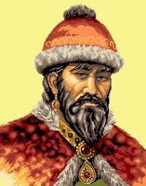
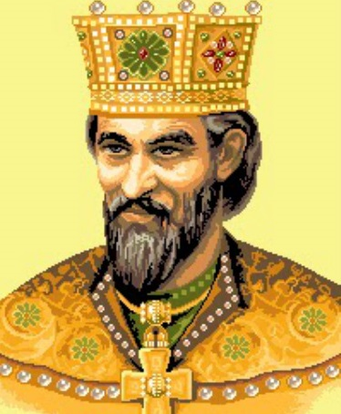
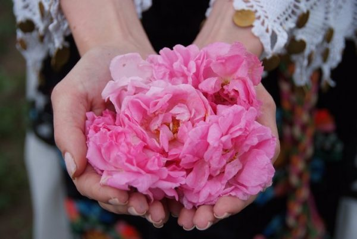
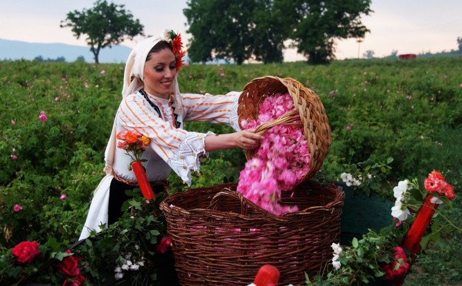

| |
БЪЛГАРИЯ |
|
След разпадането на Велика България, която е завладяна от хазарите, част от прабългарите, водена от Аспарух, и друга, водена от Кубер, се преселват на Балканския полуостров и се сливат със славяните, дошли от север в началото на VI век и смесили се с местните византийци. След като Аспарух извоюва победа над армия на византийския император Константин IV, се сключва споразумение между Аспарух и Константин. Според него прабългарите и славяните получават по-голямата част от територията между Стара планина и р. Дунав. С това се поставя началото на създаването на оформящата се българска народност. Договорът с Византия от 681 г. се приема като момент на създаване на Първата българска държава.
По време на управлението на Крум (803 – 814) България се разраства на югозапад и югоизток, населвайки района на днешна София през 811 г. и днешен Одрин през 813 г. Побеждава император Никифор I в битката при Върбишкия проход на 26 юли 811 г. и от черепа му си прави обкована чаша. Достига до портите на Константинопол, но не успява да ги премине.
Княз Борис I (Михаил) (852 – 889 г.) приема християнството за официална религия. Съпротивата в лицето на някои боляри е смазана жестоко – тези, които не желаят да приемат новата религия, са преследвани и избивани. Детронира и ослепява първородния си син княз Владимир Расате (889 – 893 г.) заради опита му да върне езичеството. Княз Борис I предприема този ход, за да обедини прабългари и славяни, които по онова време имат коренно различни религии, както и за да укрепи международния престиж на България в силното „семейство“ на християнските държави. Българите получават правото на собствена архиепископска църква. Около 886 г. Борис приема в България прогонените от Великоморавия ученици на Кирил и Методий – Климент, Наум и Ангеларий. Така новосъздадената от братята Кирил и Методий азбука – глаголицата.
Българската Роза 
Маслодайните рози са растения от род Роза, известни с етеричното си масло, което се ползва в парфюмерията и козметиката. Известни са и като „роза Ото“ – рози с розово масло. Счита се, че отглеждането на рози за получаване на розова вода и по-късно на розово масло е започнало в Индия и Египет. С придвижването на турците и арабите през 9 век то е пренесено в Персия и Тунис. Търговията с розово масло в Европа е започнала през 16 век, а първите данни за розови насаждения по нашите земи са от 17 век – около Одрин, а в пределите на днешна България първите документални сведения са от 1712 г. за землището на с. Войнягово, Карловско. Със сигурност се знае, че в средата на 19 век се е формирала съответно наречената Розова долина, в района между Казанлък, Карлово и Стрелча. Преди Освобождението в България е имало около 10 хил. декара насаждения и производството на розово масло е достигнало 1000 kg. Най-големи площи са създадени и отглеждани около Първата световна война – около 90 хил. декара, след което площта намалява до 30 хил. декара.